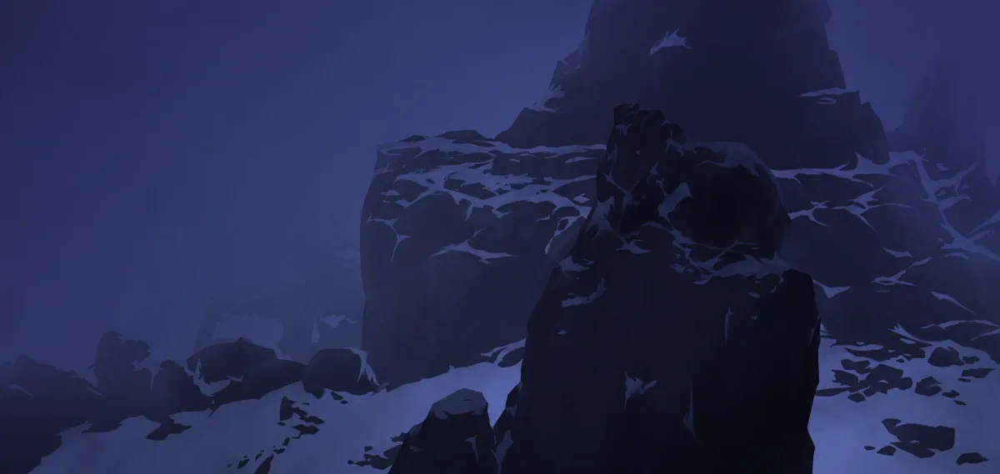

01 / 03Last Breath
Personal game concept · Concept art
An original game concept I'm developing, inspired by tenth-century Slavic, Celtic and Nordic folklore.

- Type
- Personal game concept, in progress
- Focus
- Concept art and creature studies
- Process
- Digital painting and photobashing
- Inspiration
- Tenth-century Slavic, Celtic and Nordic folklore
Project images
-

2Environment concept -

3Character silhouettes -

4Creature concepts -

5Creature head studies